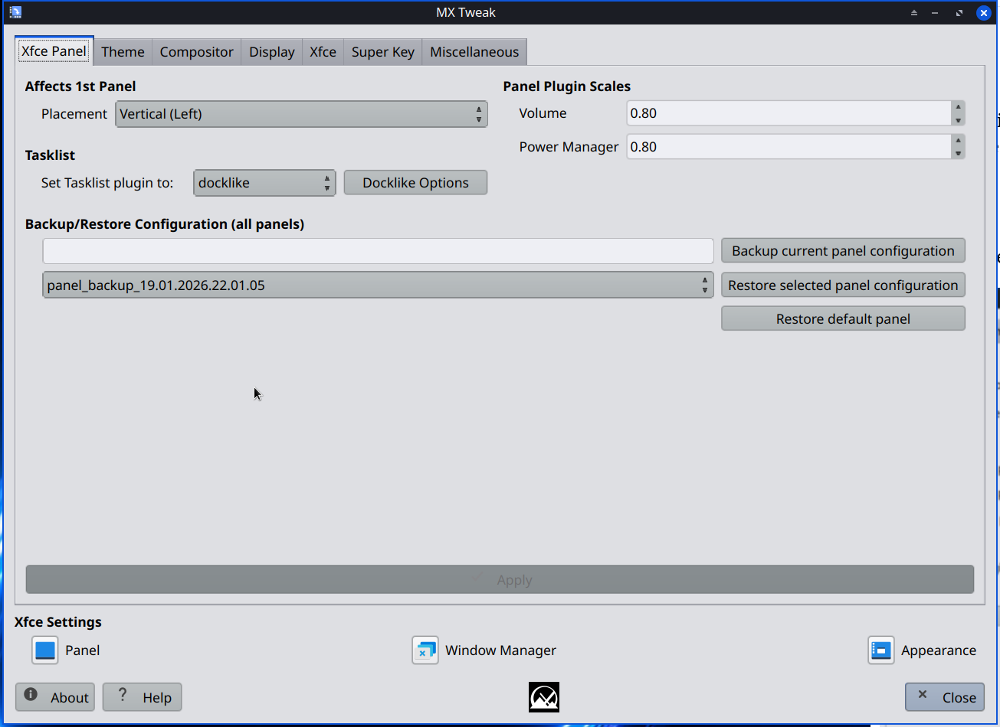
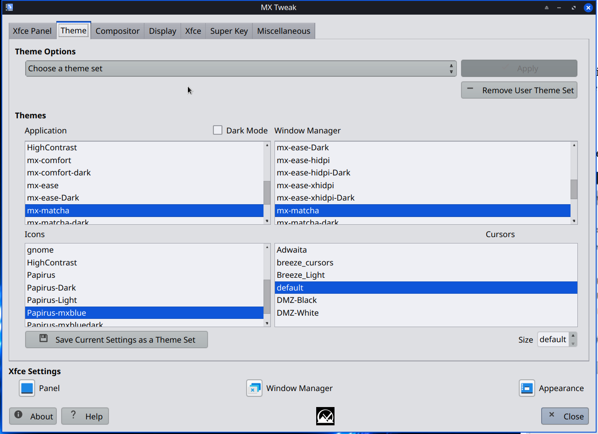
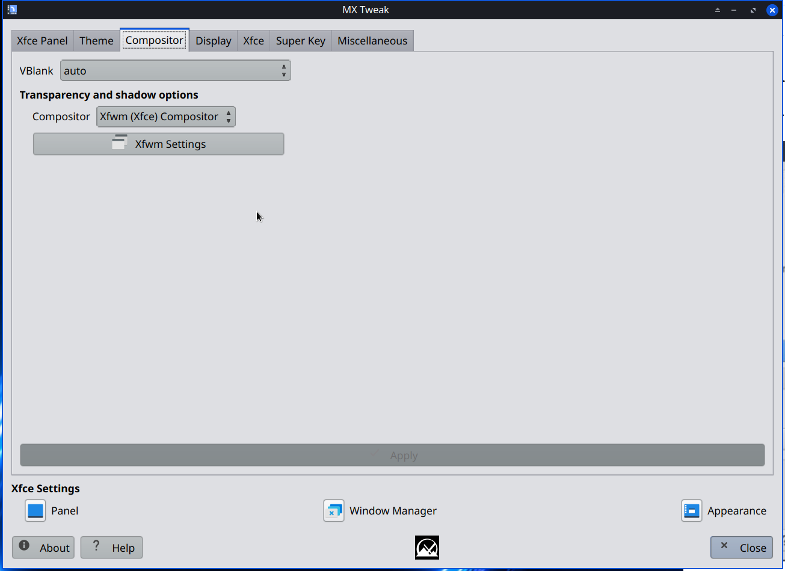
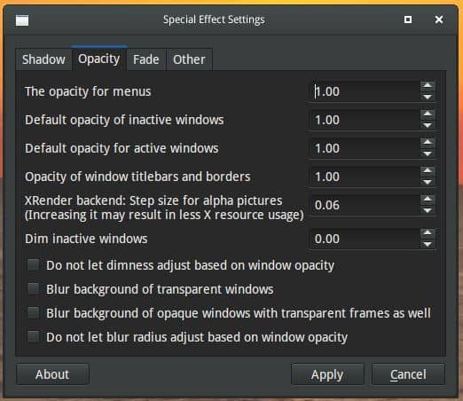

MX Ajustements regroupe plusieurs petits outils de personnalisation souvent utilisés. Les applications de paramétrage associées, natives à Xfce, sont présentées ci-dessous pour la commodité de l’utilisateur.
Permet de procéder à de rapides changements des choix par défaut de l’interface utilisateur.

L’utilisateur peut choisir d’afficher le tableau de bord par défaut horizontalement (en haut ou en bas) ou verticalement (gauche–défaut–ou droite). Les personnalisations, y compris les plug-ins du tableau de bord, seront conservées, bien que l’emplacement des plug-ins puisse être modifié.
Une sauvegarde du tableau de bord actuel est placée dans ~/.restore/. Cette sauvegarde est créée au premier lancement de l’application, et une nouvelle sauvegarde peut être faite à n’importe quel moment.
L’utilisateur peut utiliser “Rétablir le tableau de bord par défaut” pour revenir au tableau de bord d’origine.

Dans cet onglet, l’utilisateur peut décider de changer le thème actuel par le thème par défaut de MX sombre (dark), MX clair (light), Nichi (tableau de bord horizontal), Nichi (tableau de bord vertical) ou Numix. Cela aura pour effet de changer le style de gtk, le style du gestionnaire de fenêtre, et le thème d’icône.
L’ajustement pour Firefox va imposer un thème clair pour Firefox, ce qui permettra de résoudre un problème avec certains sites web, y compris Netflix et YouTube, où les champs de texte ne s’affichent pas correctement lors de l’utilisation d’un thème sombre.
L’ajustement pour HexChat va modifier la configuration de HexChat afin de rendre plus lisible le texte dans la zone de saisie du chat.
Ici l’utilisateur peut choisir d’utiliser un gestionnaire de composition de fenêtre, et le compositeur à utiliser.

Xfwm est le gestionnaire de fenêtre par défaut de Xfce, et il intègre son propre compositeur. Par défaut, ce compositeur est désactivé dans MX Linux car il peut causer divers problèmes sur les machines les plus anciennes. Lorsque vous sélectionnez son compositeur via le menu déroulant, le bouton “Paramètres de Xfwm” devient actif et, lorsque vous cliquez dessus, vous donne accès à des paramètres de base. Pour plus de détails, consultez le wiki de Xfce.
Compton est souvent utilisé à la place de Xfwm pour réduire les phénomènes de déchirements d’écran qui gênent quelquefois les compositeurs légers comme Xfwm. MX Ajustements vous offre un moyen simple de lancer, arrêter et configurer le compositeur Compton.
Au démarrage, un fichier de configuration compton.conf sera créé dans ~/.config s’il n’est pas encore présent.
Le bouton “Arrêter Compton” deviendra “Lancer Compton” s’il n’est pas déjà lancé.
Le bouton “Paramètres de Compton” lancera compton-conf, un outil de configuration du projet LXqt pour compton. L’outil de configuration compton-conf fonctionne de manière optimale avec le fichier compton.conf inclus avec le paquet. Les changements effectués par compton-conf prendront effet après avoir cliqué sur “apply”.

Si vous avez déjà un fichier compton.conf, ou que vous souhaitez changer des paramètres non disponibles dans l’interface graphique, le bouton “Éditer compton.conf” ouvrira ~/.compton.conf dans un éditeur de texte pour que vous l’éditiez directement. Utilisez le bouton Lancer-Arrêter pour relancer compton afin que les changements manuels prennent effet.
Cocher “lancer à la connexion” activera le démarrage automatique de compton. Cela fonctionne si le fichier compton se trouve à l’emplacement par défaut de ~/.config/compton.conf.